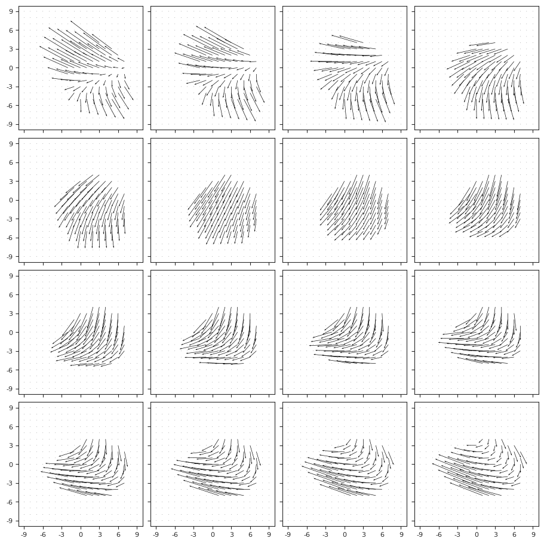
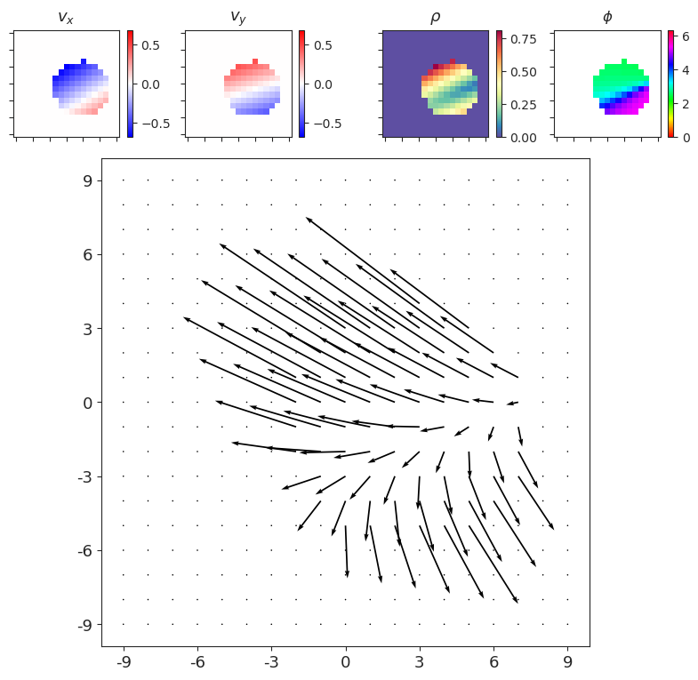
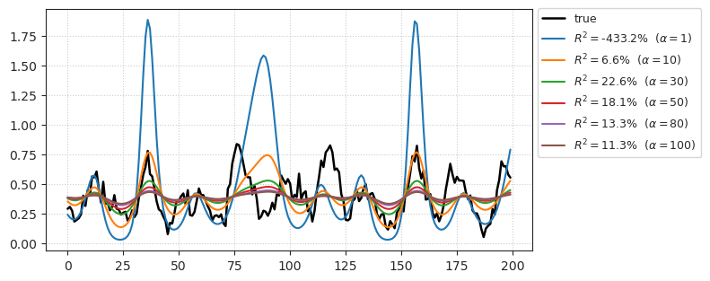
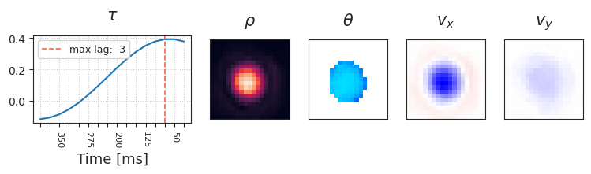
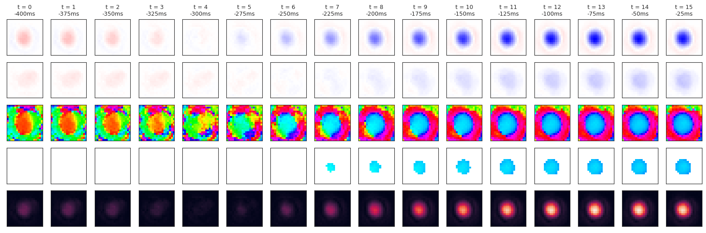
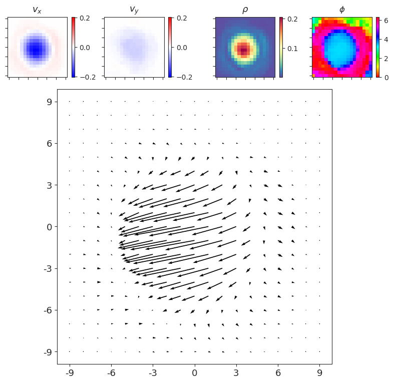
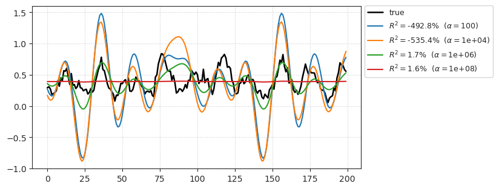
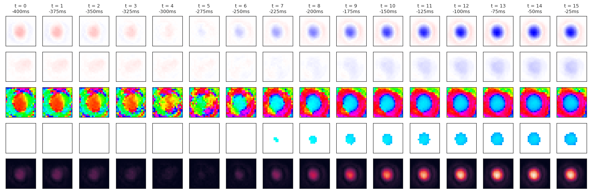
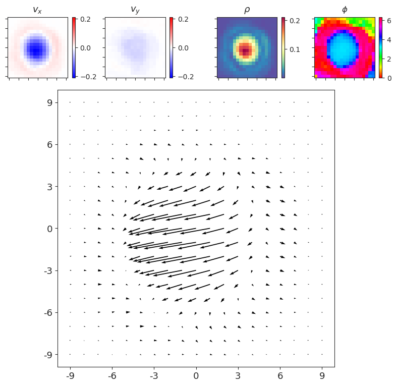

(04) Dan notebook¶
Motivation: Load data, basic visualization, and linear fits: GLM + Ridge regression.
# HIDE CODE
import os, sys
from IPython.display import display
# tmp & extras dir
git_dir = os.path.join(os.environ['HOME'], 'Dropbox/git')
extras_dir = os.path.join(git_dir, 'jb-MTMST/_extras')
fig_base_dir = os.path.join(git_dir, 'jb-MTMST/figs')
tmp_dir = os.path.join(git_dir, 'jb-MTMST/tmp')
# GitHub
sys.path.insert(0, os.path.join(git_dir, '_MTMST'))
from analysis.opticflow import *
from figures.fighelper import *
# warnings, tqdm, & style
warnings.filterwarnings('ignore', category=DeprecationWarning)
from rich.jupyter import print
%matplotlib inline
set_style()
from model.dataset import setup_repeat_data, setup_supervised_data
from analysis.linear import *
Load data¶
We will work with one of the experiments: expt='clu099'
file = '/home/hadi/Documents/MTMST/data/MTLFP_tres25.h5'
file = h5py.File(file, 'r')
expt = 'clu099'
grp = file[expt]
Create stimulus form 8 hyperflow params¶
hf_kws = {
'size': 19,
'sres': 1,
'radius': 5,
}
hf = HyperFlow(
params=np.array(grp['hyperflow'])[:, 2:],
center=np.array(grp['hyperflow'])[:, :2],
**hf_kws,
)
stim = hf.compute_hyperflow()
print(f"stim shape: {stim.shape}")
stim shape: (72000, 19, 19, 2)
Show a few frames from the stimulus¶
show_opticflow(stim);

show_opticflow_full(stim[0]);

Load spikes¶
spks = np.array(grp['spks'], dtype=float)
good = ~np.array(grp['badspks'])
good = np.where(good)[0]
print(f"good spks: {100 * len(good) / len(spks):0.1f} %")
good spks: 62.9 %
Fit GLM¶
Prepare (time embed)¶
lags = 16
src, tgt = setup_supervised_data(lags, good, stim, spks)
stim_r, spks_r, intvl = setup_repeat_data(grp, lags, hf_kws=hf_kws)
msg = f"stim: {src.shape}, spks: {tgt.shape}\n"
if 'repeats' in grp:
msg += f"stimR: {stim_r.shape}, spksR: {spks_r.shape}"
else:
msg += f"stimR: {None}, spksR: {None}"
print(msg)
file.close()
stim: (45318, 16, 19, 19, 2), spks: (45318, 1) stimR: (200, 16, 19, 19, 2), spksR: (1, 131, 200)
Fit GLM¶
kws = {
'category': 'PoissonRegressor',
'alphas': [1, 10, 30, 50, 80, 100],
'verbose': True,
'n_folds': 5,
'seed': 0,
}
channel = 0
kws = {
'x': src,
'y': tgt[:, channel],
'x_tst': stim_r,
'y_tst': np.nanmean(spks_r[channel], 0) if spks_r is not None else None,
**kws,
}
%%time
glm = LinearModel(**kws).fit()
Category: 'PoissonRegressor', default params: {'alpha': 1.0, 'fit_intercept': True, 'max_iter': 100, 'tol': 0.0001, 'warm_start': False, 'verbose': 0}
CPU times: user 47min 49s, sys: 25.9 s, total: 48min 15s
Wall time: 2min 18s
glm.r2_tst
{1: -433.22975165620824,
10: 6.552521697385883,
30: 22.565445567202524,
50: 18.107718503476388,
80: 13.309516067337512,
100: 11.267663796511862}
glm.r_tst
{1: 0.41299133671289656,
10: 0.47318407071842006,
30: 0.4879439790529754,
50: 0.4902542587736626,
80: 0.49080379774605987,
100: 0.49139796788723955}
glm.df
| nnll | r2 | r | |
|---|---|---|---|
| alpha | |||
| 1 | 0.241049 | -434.287145 | 0.393816 |
| 10 | 0.122859 | 6.517361 | 0.372595 |
| 30 | 0.059787 | 22.547371 | 0.355866 |
| 50 | 0.039490 | 18.093788 | 0.350155 |
| 80 | 0.026099 | 13.296959 | 0.346394 |
| 100 | 0.021276 | 11.255343 | 0.345007 |
glm.show_pred();

glm.kers[30].show();

glm.kers[30].show_full();

tker, sker = glm.kers[30].get_kers(0)
_ = show_opticflow_full(sker[0], scale=1.1)

Ridge regression¶
%%time
kws['category'] = 'Ridge'
kws['alphas'] = [1e2, 1e4, 1e6, 1e8]
ridge = LinearModel(**kws).fit()
Category: 'Ridge', default params: {'alpha': 1.0, 'fit_intercept': True, 'normalize': False, 'copy_X': True, 'max_iter': None, 'tol': 0.001, 'solver': 'auto', 'random_state': 0}
CPU times: user 1h 23min 17s, sys: 13min 49s, total: 1h 37min 6s
Wall time: 5min 35s
ridge.r2_tst
{100.0: -492.84446713997136,
10000.0: -535.4089166187075,
1000000.0: 1.6995581632989976,
100000000.0: 1.5833470558342722}
ridge.r_tst
{100.0: 0.5654645394138909,
10000.0: 0.5353233783450251,
1000000.0: 0.5054371219996902,
100000000.0: 0.4920224602702661}
ridge.df
| nnll | r2 | r | |
|---|---|---|---|
| alpha | |||
| 100.0 | 0.077289 | -516.842746 | 0.439223 |
| 10000.0 | 0.202103 | -523.437300 | 0.425047 |
| 1000000.0 | 0.116203 | 12.193662 | 0.362195 |
| 100000000.0 | 0.001853 | 1.258313 | 0.339137 |
ridge.show_pred();

ridge.kers[1e6].show();
ridge.kers[1e6].show_full();

tker, sker = ridge.kers[1e6].get_kers(0)
_ = show_opticflow_full(sker[0], scale=1.5)
